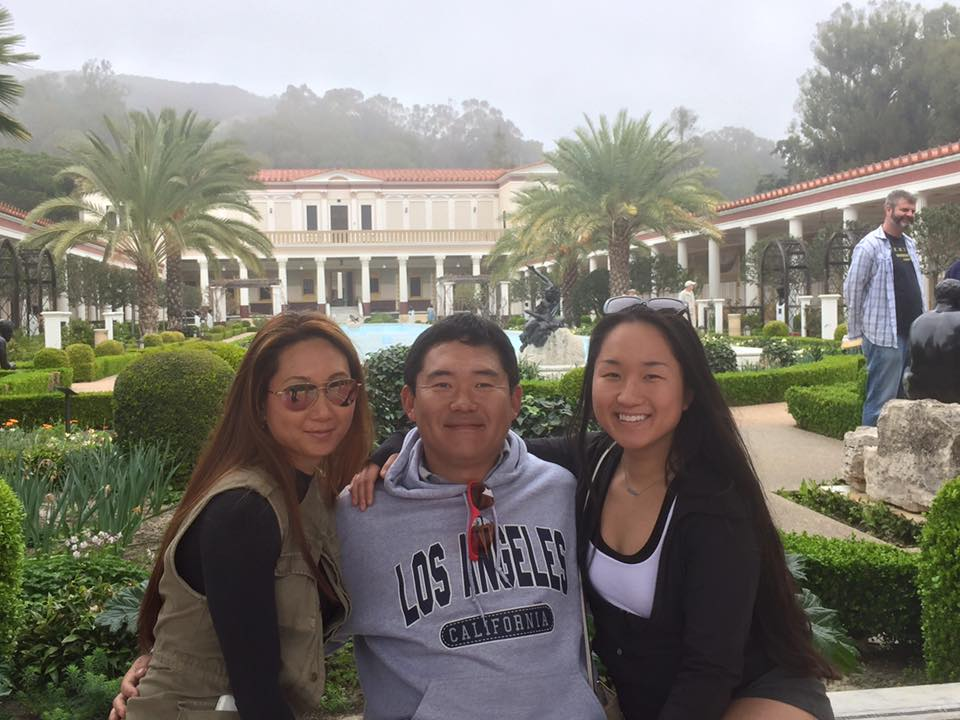

University of Michigan
, Ann Arbor, MI
2015 - Present
B.S. in Computer Science, Anticipated May 2018
Relevant Coursework:
‣ UC 421: Residence Staff Class (social-justice focus)
‣ EECS 280: Programming & Introductory Data Structures
‣ EECS 203: Discrete Math
‣ ENTR 490: Special Topics Entrepreneurship
‣ EECS 183: Elementary Programming Concepts
‣ ENTR 407: Entrepreneurship Hour
‣ EECS 281: Data Structures & Algorithms
‣ STATS 250: Intro to Statistics & Data Analysis
‣ ARTDES 176: Graphic Design
Simmons College
, Boston, MA
2013 - 2015
Relevant Coursework:
‣ MATH 121: Calculus II
‣ MATH 118: Intro Statistics
University of Michigan
2016 - Present
Resident Advisor
Service.com
May 2016 - Aug 2016
Software Development Intern
Division of Sleep and Circadian Disorders
Oct 2013 - June 2015
Research Assistant
‣ Co-authored paper concluding shift-workers are at high risk of narcolepsy, Alzheimer's, and cardiovascular disease
‣ Used detrended fluctuation analysis to analyze data
Newton San Juan del Sur Sister City Project
Spring 2014
Volunteer
‣ Teamed with nine peers from Simmons and Emmanuel College in a weeklong community service project to build
and
install 29 Bio-Sand water filters, helping a total of 120 residents obtain access to clean water, 99% free of E. coli
and
100% free of parasites; risks of malnutrition, diarrhea, and developmental issues were significantly reduced
testimonial
I remember when I first started going to school in America, at the age of five, the only things I knew in English were "yes" "no" and "Can I go to the bathroom?" At school, someone would ask me "What's your name?" "Yes," I'd answer. "How old are you?" "Yes." I had to remember what other kids said to me, repeat what I remembered at home, and have my parents translate for me.
I moved to America 15 years ago, when my parents came back to Uzbekistan, after working several months in America, to take me back to America with them. Growing up as an Asian immigrant, though the immigration itself was so long ago, is something that has made it harder for me to live comfortably within this society, and effectively, within myself. At school, I never seemed to fit in. Never, and still, to this day, do I remember feeling the comfort of having a close group of friends that genuinely understood me. Yes, I had best friends, but even they did not accept me fully. At home, I was under huge pressures, as most Asian kids are, and my slightly Russian background didn't make that reality easier. At school, I was also under a huge pressure--the pressure of fitting in. I grappled with both, doing neither to the best of my ability, and just like that, continued to develop in uncharted directions.
There is a history behind Koreans like me. I am technically called Koryo-saram. We are the Koreans whose history was literally wiped out. I struggle with identity to this day, because many years ago, a Russian dictator named Stalin, ordered a deportation of thousands of Koreans from Russia to Uzbekistan and Kazakhstan, thinking we were Japanese spies (lol). We were thrown into the empty wastelands of those two countries, thousands of us died, and those who survived had to rewrite their entire histories. Why? Because being the nice and kind dictator he was, Stalin decided to make it illegal for Koreans to play Korean music, teach the Korean language, show any Korean plays, read Korean books, the list goes on and on. This is also why I don't know Korean. Anyways, that got morbid, but is essentially why I feel I don't belong… because I don't really have a strong foundation of history behind me. It really feels like my history started when my parents moved me here, 15 years ago.
As for my privileged identity, I'm very privileged in my opinion. I might struggle with identity, but I don't struggle with finances, and frankly, I'd much rather that than the reverse situation. My parents did all the work for me on that front. They worked hard as hell, and enabled me to be able to grow up in Newton, Massachusetts, ranked the second wealthiest Urban area in the US in 2010. My high school, Newton North High School, was rebuilt when I was a sophomore there, and the whole thing cost just under 2 billion dollars. Anyways, the point I'm trying to get across is money is and was something that my parents made a conscious effort to not have me worry about. To this day, when I talk to my dad on the phone, he randomly throws in a "do you have enough money?" Which, most of the time I do, but when I don't, he sends me some, and even when I say I have enough, he sometimes still sends me some. After I leave college, I won't be in debt, because I got a societally acclaimed top-notch education from my expensive high school, which was due to privilege. While I'm here, it's not a pressing concern if I don't work (which I don't), because my ability to receive education doesn't depend on me making money. I want to say I'm grateful for these things, which, I am when I think about them, but for the most part, I don't think about them. And see, that's what privilege is at its core. Privilege is the lack of gratitude for certain things that happen to me, because those things are relatively normal for the reality I exist in. If having to worry about money is something that I had to do for most of my life, and suddenly, I didn't have to anymore, I'd probably be grateful for that longer than a minute. But everything is relative, and that isn't my reality. So, for now, thanks, World, for benefiting me in such a way, but tomorrow, this privilege will again be something that doesn't even cross my mind.

Here are my parents and me.
The most compassionate, caring,
and giving individuals I know .
Mom, dad, if you see this, I love you
and thanks for everything you do .
PS. I also have a little bro and little sis
who are not in this picture unfortunately
but I will have pics of them up here soon!
a real-life facilitation experience
Over Spring break in California...
My family and I were at a Japanese restaurant, enjoying our delicious sushi, when our conversation somehow took a turn for the worse (or better)-we reached the topic of institutional racism and oppression in general. The reason I say worse is that my dad is quite conservative in his views; my mom is also, but to a substantially smaller degree than that of my dad. However, I put in parentheses "better,"" because it was a learning opportunity for us all.
As the conversation began to unwind, I could feel sensations of annoyance and tension sizzling and building up within me. I knew I was right, and I knew my dad was wrong. My dad was generalizing his personal experiences onto the rest of the world, and we, as social justice advocates, all know that this is probably one of the worst means to a perspective to embrace. Now, normally (and by that I mean prior to taking UC 421), this build-up of stress would be enough to silence me, because one, I wouldn't know how to articulate my thoughts, and two, because I just didn't think it was worth "fighting" with my (sometimes) hard-headed parents. This time however, I felt a change within me. I felt a new sense of empowerment and strength, and developed a new kind of courage that let me calmly, thoughtfully, and eloquently express my thoughts.
In hindsight, I used several of the methods we learned in UC 421 in this situation. For practicality, I'll list them here: active listening, asking generative questions, and facilitating a discussion (as opposed to an argument). These tools worked, and I know this because this was the first time in a situation like this that my parents actually had small epiphanies. Whereas before, my words were not powerful enough to convince them of my credibility in the subject matter, now, I knew how to phrase things so as to grab and sustain their attention.
Of course, I didn't completely change my parents; perspective. In my experience, the opinions of older people, and especially of one's own parents are tougher to change than others'. However, this experience showed me that I have the capacity to make people think and question their own beliefs. Despite the conclusions that the actual discussions might reach, I know that my words will make people more self-aware, whether that's subconsciously or consciously, and if nothing else, that is the goal. And hopefully, these small steps in the right direction will all add up, eventually, to result in true justice for all.
Facilitation skills learned:
Active listening → I am listening in order to find opportunities where I can help/actively contribute
Generative listening → Attempt to deduce new insights from what's being said to me
Asking open-ended questions → Facilitates a learning environment for all people
Facilitating a discussion (instead of argument) → Discussions allow people the comfort to voice their opinions/ideas
How will I use these skills on ResStaff? I think these skills are vital to have and to practice on and off ResStaff. The way I see it, they are the foundation off of which I'll be developing my relationships with pretty much anyone in my life! However, in regards to ResStaff specifically, I can envision myself using these almost every day, whether it'll be having a quick chat with one of my residents in passing, or having an intimate dialogue about something they're struggling with. Of course, in the latter situation, I'll be paying significantly more attention to these skills (and others).